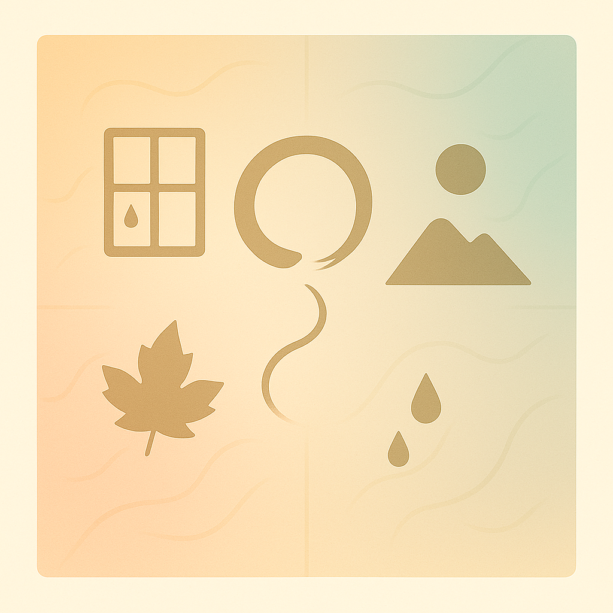

快速链接

寒露
2025年11月04日

电梯的海报
搬到那个公寓大概是二月份。是个新的公寓，住户陆陆续续搬了进来。物业人员格外热情。大概是人少，楼道碰到，都是毫无违和感的点头之交。电梯里有一面海报墙，没有软广，每个月都会张贴一张写满这个月的集体活动的海报。人之性恶，哪一天这个月贴着上个月的海报，我会暗自窃喜，为自己的懈怠找到一个出口。我会想物业人员也被时间赶着，公寓也慢慢老去。遗憾万分，从未发生。每个月的月初，新的海报准时贴上。我从没参加过任何活动，新的海报就是告诉我时间在向前走。十月的海报是橘色，加州郊外应是星星点点，到处打灯的人。
人各司其职。贴海报的人，却成了推着我朝着时间向前的那位。
声音和温度
秋天有声音。或许从第一声叹气开始。风吹过树叶，沙沙作响，落叶慢慢飘落。风干后的落叶，脆脆的，碰到水泥地上，像咬开薯片的声音，咔嚓，咔嚓。春江水暖鸭先知，等到满地落叶，总能看到小孩，成群结队地踩上去，应该很软吧，吱吱作响。笑声也吹起落叶。
秋天有温度。阳光也会随着落叶的颜色，变得柔和。傍晚的太阳，像烤箱里恰到好处的红薯，金黄，焦脆，扑面而来的暖流。秋天的光格外慵懒。记忆里，小时候经常在秋天体验感冒初愈。有的时候打完点滴，烧退了，从医院门出来，感觉那些傍晚的光才是治愈我的原因。
秋天的声音和温度是私有的。往往也与生活节奏背道而驰。需要你慢下来。老人和小孩，往往擅长于此。年轻一些，或多或少就会对她们嗤之以鼻，偏爱能被具象化的感受。
代顿一日游
我在杭州长大，经常随家人会短途旅行，亦或工作，亦或回老家。夜路居多，小时候，就有种莫名随父同去，奔赴沙场的感觉。所以格外喜欢夜路，也格外喜欢road trip。路上总会主动去找休息站，想着小时候的我会觉得，到了休息站，便可以像大人一样，买的一桶泡面，加香肠和卤蛋，烫着吃。
以前，坐在车后排，总能一路酣睡。从小路，到国道，到高速，路途便从四个小时，直逼两个小时。中途休息的餐馆也变了一路。从横店，浦江，到诸暨，到绍兴；从姊妹饭店，到高速休息站。从蔬菜五块，小荤十块，砂锅十五，米饭免费；到现在玲琅满目的网红店，卖着内蒙古草原牛肉干。路上的人，也变了吧。以前，玻璃窗那面，小菜都码在蒸汽加热的金属桌面上，穿着白卦的阿姨，点菜的同时也会闲聊几句。都是晚上到休息站，人少。父母喜欢用热水把碗筷杀菌消毒。大家会簇拥在一起。谈论工作的时候，我只是听着，但却总感觉与我相关，也参与其中，血脉相通。
到上次回国，还会莫名地去找到一家不起眼的快餐馆。一碟碟菜在蒸汽加热的金属桌面上。现在点不了许多了，一样用热水烫过的碗筷，簇拥在一起的时候，就像那些晚上。
很多年前了，第一次坐同学开的车，有一种莫名地违和感。感觉，像小孩开着大人的车，不切实际。如果出行到一小时以内的地方，没人会睡觉，就一路唱歌。去代顿，是一个下午。前后两三辆车，结伴而行。我开着车，有人在车上睡着了。到了目的地，阳光洒进车内，半照在脸上。我把车移到树荫底下，我没喊醒她，想着这个梦里，我也参与其中。
寒露
入秋了。如果你能早起，六七点就能见到贴着窗的寒露。窗外是白茫茫的一片。到了八九点，阳光会把白雾驱散，世界因为清晰便具体了起来。